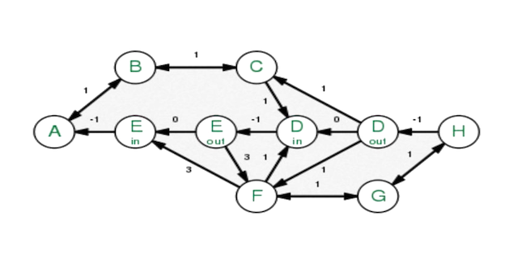

Lem-in

Overview
Lem-in is the hardest algorithmic problem I've tackled in a project setting. The premise is deceptively simple: given a colony of ants at a start room and a network of tunnels connecting rooms, move all the ants to the end room in the fewest possible turns. One ant per room, one ant per tunnel per turn.
What looks like a straightforward pathfinding problem turns out to sit at the intersection of graph theory, network flow optimisation, and multi-agent scheduling. Getting a correct solution is hard. Getting an optimal one is harder. The project is implemented in Go using only the standard library.
Why BFS Alone Isn't Enough
My first instinct was BFS to find the shortest path, then send all ants down it. That works for one ant. For ten ants on a three-room path, they queue up and you waste seven turns waiting. The better strategy is to find multiple non-overlapping paths and distribute ants across them in parallel — but deciding how many paths to use, and which combination, is a genuinely difficult optimisation problem.
Consider two options: one short path of length 3, or two longer paths of length 5 and 6. For two ants, the single short path wins. For twenty ants, the two longer paths win because parallelism outweighs the length penalty. The optimal choice depends on both the graph structure and the ant count, and no greedy rule reliably picks the right one. You have to evaluate candidates.
Max-Flow & Path Selection
The path selection problem is structurally a max-flow problem. Each room has a capacity of one (a unit of flow), each tunnel carries one ant per turn. To maximise throughput, you want the set of augmenting paths — paths that share no intermediate rooms — that minimises total turns for n ants.
I implemented an Edmonds-Karp style approach: BFS to find shortest augmenting paths, then a simulation to calculate the total turns each candidate set of paths would take for the given ant count. The turn calculation itself requires careful simulation — ants enter paths at different times as earlier ants clear the start, and the last ant to arrive at the end determines the total turn count. Finding the minimum across candidate path sets is where dynamic programming discipline matters: memoising intermediate results avoids recomputing the same simulations repeatedly.
Multi-Agent Coordination
Once the optimal path set is chosen, the movement simulation adds another layer of complexity. Each turn, every ant moves one room forward along its assigned path — but you can't place two ants in the same room simultaneously (except the start and end rooms, which have unlimited capacity). Ants on different paths might converge on a shared intermediate room; ants on the same path must maintain spacing.
Getting the turn-by-turn output right — printing each ant's move in the correct format, accounting for ants that haven't entered yet, and correctly sequencing entries as the start room frees up — took careful simulation logic with a scheduler that processes all ants per turn in order of their position along their path.
Challenges
Input parsing was a problem in itself. The input format mixes room definitions (name and coordinates), tunnel definitions, and comment lines, with special markers for the start and end rooms. Invalid inputs — malformed coordinates, missing start or end rooms, duplicate room names, tunnels referencing non-existent rooms — all needed to be caught and reported before the algorithm ran. Cycle detection and disconnected-component detection required additional graph traversal passes.
The edge cases in path selection caused the most debugging time. Graphs where the only viable route passes through a single bottleneck room (making parallelism impossible), graphs with many paths of equal length, and graphs where the start and end rooms are directly connected all produced edge-case behaviours in the flow algorithm that required specific handling.
Performance was also a concern on large inputs — graphs with hundreds of rooms and thousands of ants. Profiling revealed that the simulation loop for path evaluation was the bottleneck, and pruning obviously suboptimal candidate path sets early brought the runtime to an acceptable level.
What I Took Away
Lem-in taught me that algorithmic problems in the real world rarely fall cleanly into one category. This touched BFS, max-flow, dynamic programming, and simulation — and the skill was recognising which tool applied at which layer of the problem. It also reinforced the habit of building incrementally: solve the single-ant case first, then multi-ant on a single path, then multi-path, then optimise. Skipping steps just produces bugs that are impossible to isolate.